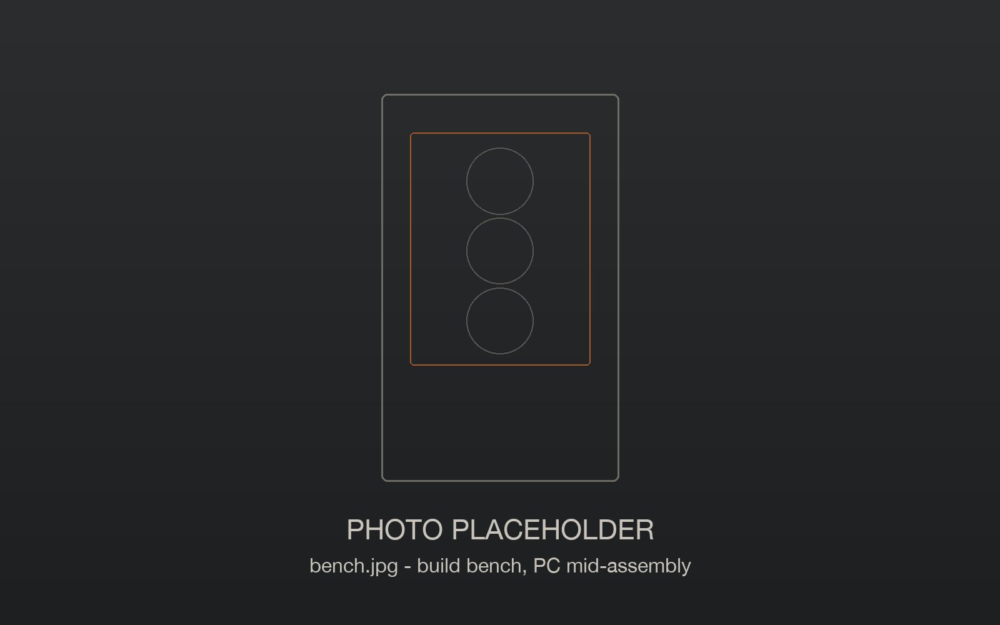

Why it exists
Buying a gaming PC usually means one of two things: a prebuilt from a national brand where the markup is hidden in the price and warranty repairs mean shipping a 30-pound box across the country, or building it yourself and hoping it works. Frame Foundry is the local option in between: your parts, your prices, built and delivered by someone nearby.
How we work
- Open pricing. Parts at what we pay plus 5%, and a build fee you can see. You can check every price yourself.
- Built to order. Parts are bought for your PC after your deposit. No stock, no "equivalent" swaps without asking.
- Tested before it leaves. Stress tests, temperature checks and a written checklist, with photos of your build.
- Local help. Delivery and setup by hand, and a year of local labor warranty. If something goes wrong, we come to you.
Who builds it
Frame Foundry is a small team based in Canoga Park. We quote, build, test and deliver every PC ourselves - nothing is outsourced - and the email address on your quote reaches the people building your PC directly.
The business
Frame Foundry is a trade name of Pacific Front Desk LLC, a California limited liability company. We work from a home workshop in Canoga Park, so there is no storefront or showroom: quotes happen by email or phone, and PCs are delivered to you. Service area: Canoga Park, Woodland Hills, West Hills, Tarzana, Calabasas, Hidden Hills, Agoura Hills, Westlake Village, Thousand Oaks and Simi Valley.